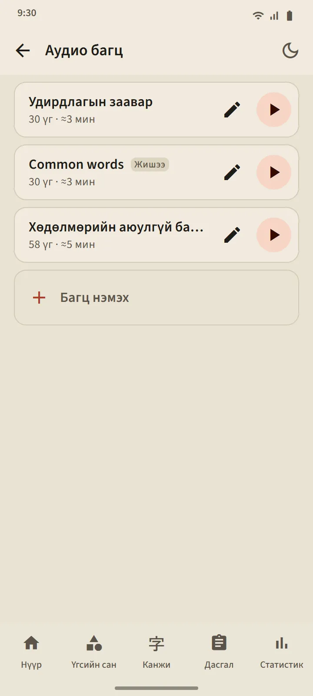

Өөрөө үүсгэдэг Аудио багц
5-аас 100 үгтэй багц үүсгэнэ: нэг нэгээр нь хайж нэмэх, эсвэл ямар ч үгсийн сангийн багцаас олноор авах. Тоглуулагч үг бүрийг япончоор, дараа нь аппын хэлээр утгыг нь уншина («Утгыг чангаар уншуулах»-ыг унтраавал зөвхөн япончоор). Одоогийн үг фуриганатай том харагдана; жагсаалт дахь үг дээр дарж тийш үсэрнэ.
Удирдлага: холих, давтах, 0.75×, 1× эсвэл 1.25× хурд. Дэлгэц унтарсан эсвэл өөр апп руу шилжсэн ч тоглуулагч үргэлжилнэ; тоглуулагчийн мэдэгдэл ба чихэвчний товчууд удирдлагыг хадгална.
- Үнэгүй хувилбар: 3 багц. Premium: хязгааргүй, багцыг нэг аудио файлаар (M4A) татаж авч болно.
- «Common words» гэсэн жишээ багц хамгийн их тохиолддог үгсээс автоматаар үүснэ; хүссэнээрээ засаж эсвэл устгана.
- Сонсох нь үгийн товлол эсвэл шатыг хэзээ ч өөрчлөхгүй.


Дуудах дасгал: хэлээд, цааш нь
Таны Мэддэг болсон эсвэл Эзэмшсэн үг картан дээр гарна; микрофон өөрөө асаад та үгийг хэлнэ, утас таньвал дараагийн үг гарна. Танихгүй бол дэлгэц сонссон зүйлийг харуулаад дахин сонсоно; гурван оролдлогын дараа жишээг тоглуулна. Микрофоны товч, жишээний товч, Алгасах үргэлж байна. Нэг дасгал 5, 10, 15 эсвэл 20 үгтэй.
Таны дуу хоолойг утасны яриа таних үйлчилгээ (ихэвчлэн Google-ийнх) боловсруулдаг; апп түүнийг бичихгүй, хадгалахгүй. Зөвхөн үгийг шүүнэ, аялгууг биш. Яриа таних нь буруу сонсож болох тул энэ дасгал үгийн шатыг хэзээ ч бууруулдаггүй.

Канжи бичих: зураас зураасаар
Таны Мэддэг болсон эсвэл Эзэмшсэн канжид зориулсан. Зөвхөн утга ба уншлага харагдана; та бүтэн өргөнтэй талбарт бичиж, хуруугаа өргөх бүрт зураас бүрийн хэлбэр, чиглэл, дарааллыг шалгана. Зөв зураас жишиг хэлбэрт нь наалдана; буруу дараалал эсвэл эсрэг чиглэлийг нэг өгүүлбэрээр няцаана; хоёр удаа алдсаны дараа дараагийн зураас эхлэх цэгтэйгээ бүдэгхэн гарна.
- Санаанаасаа: хоосон талбар. Сүүдэртэй: канжи бүдэгхэн харагдана, бэлтгэл хийхэд. Дарааллаар дарах: канжи бүтнээрээ харагдана; зураасыг нь дарааллаар дарна.
- Хөдөлгөөнт дүрс товч канжийг бичиж буй бүх явцыг хэзээ ч тоглуулна.
- Канжийг хоёр өөр өдөр тусламжгүйгээр санаанаасаа бичвэл Бичиж чадна гэж тооцогдоно; нэг дасгалд 5, 10 эсвэл 15 канжи.


Хаана ч дуудлага
Үгийн карт, канжи карт, үгийн дэлгэрэнгүй, кана хичээл, хэл зүйн жишээ, сонсголын асуултыг утасны япон текст-яриа хувиргагч бүгдийг уншдаг тул аудио файл татах шаардлагагүй. Дууны чанар утас бүрийн системийг дагана.